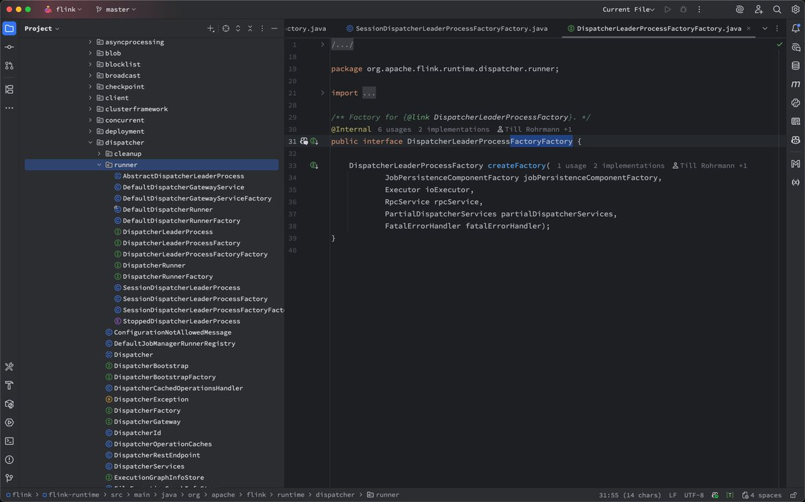

👾Iris-de-lux
@theforeveriris
@tison1096 I once thought that encapsulation and inheritance were the most significant features of Java. After all, this is how the new generation of textbooks explain it.

tison
@tison1096
这个不是新生代独有的，甚至不是很多人责怪的设计模式。这套东西的祸根来自 EJB 时期鼓励抽象的指导思想。
Apache Flink 有段时间矫枉过正到处疯狂封装，搞出了我记忆犹新的一个功能十一层 indirection 的设计。
但是后来加入某厂以后，我才发现 Flink 只是啰嗦，内部代码的继承关系简直就是乱伦。 https://t.co/aM9JFhtiye https://t.co/CbuamVpFGR